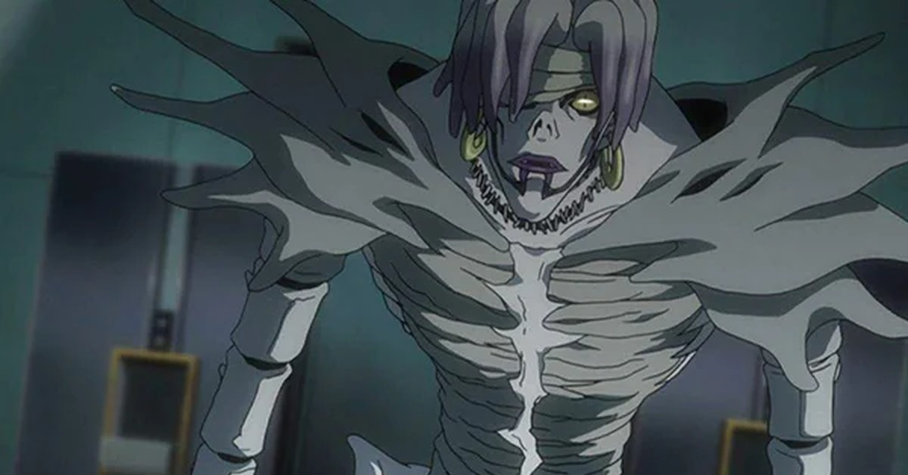

Когда Рюк развлекается в мире людей, Рэм поступает с точностью наоборот. Она смотрит на большинство людей с презрением. Кроме того, когда Рюк равнодушно относится к успеху или поражению Лайта Ягами, Рэм активно помогает Мисе. Она даже готова пожертвовать своей жизнью, чтобы защитить её, о чем свидетельствует угроза Лайту. Ради Мисы она помогала Лайту в его планах. Обата сказал, что она является его любимой богиней смерти, по его словам она "хороший человек", хотя она и богиня смерти. У Рэм очень худое телосложение, виден очень длинный позвоночник. Есть запоминающиеся черты, такие как волосы и голубая маркировка на лице. Единственным исключением является случай в аниме, там её маркировка фиолетовая. Все другие средства массовой информации, такие как фильмы и игры, её детали - синие. В манге и аниме Рэм говорит Мисе, что она на самом деле является богиней смерти. Во втором игровом фильме об этом не говорят; это остается не однозначно. Её так же озвучивают более мужским голосом.Бог смерти Джелос, влюбившийся в Амане Мису, намеренно продлил ей жизнь, записав в свою тетрадь имя человека, который должен был её убить. Но боги смерти не имеют права искусственно увеличивать жизнь людей. Нарушив этот закон, Джелос тут же превратился в горстку пепла. Тронутая его жертвой, Рэм решила передать тетрадь Джелоса Мисе. Рэм практически полная противоположность Рюка, которому нравится все в мире людей. Она презрительно относится к человечеству, считая свою расу более развитой. В конечном итоге Рэм привязывается к Мисе и старается защитить её от Лайта, которого искренне презирает. По мере развития сюжета Лайт заставляет Рэм убить Ватари и L, тем самым Лайт избавляется сразу от трех проблем. Рэм записывает в свою тетрадь имена Ватари и L, а затем умирает сама.
